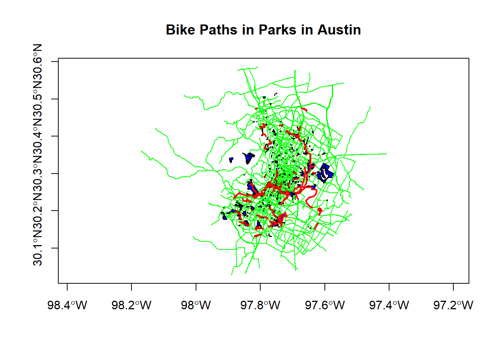
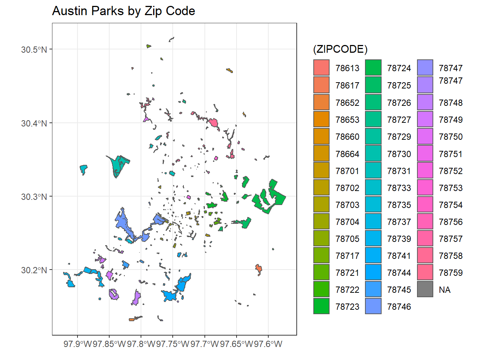

Chapter 6 Geoprocessing
6.1 Lesson Goals
A quick look at a couple typical topological operations (spatial subsetting, spatial joins, dissolve) using sf
6.2 Example one
6.2.1 Spatial Subsetting
Let’s look at the bike paths and parks data in the awra2020spatial package. A typical spatial question we might ask of our data is ‘what trails go through parks in town?’ A great feature of sf is it supports spatial indexing:
library(sf)
library(awra2020spatial)
data(parks)
data(bike_paths)
plot(bike_paths$geoms, col='green', axes=T)
plot(parks$geoms, col='blue', add=T)
paths_in_parks <- bike_paths[parks,]
plot(paths_in_parks$geoms, col='red', lwd = 2, add=T)
title(main='Bike Paths in Parks in Austin')
6.3 Example two
6.3.1 Spatial Join
First we’ll use chained operations to select just a couple columns from both bike_paths and parks, and then we’ll do a spatial join operation in sf. Note again, when we do a select on just attribute column, the geometry column remains - geometry is sticky in sf!
library(dplyr)
bike_paths <- bike_paths %>%
dplyr::select(ROUTE_NAME)
parks <- parks %>%
dplyr::select(LOCATION_NAME, ZIPCODE,PARK_TYPE)
parks_bike_paths <- st_join(parks, bike_paths) # st_intersects is the default
glimpse(parks_bike_paths)## Rows: 606
## Columns: 5
## $ LOCATION_NAME <chr> "Stratford Overlook Greenbelt", "Highland Neighborhoo...
## $ ZIPCODE <chr> "78746", "78752", "78703", "78753", "78724", "78702",...
## $ PARK_TYPE <chr> "Greenbelt", "Neighborhood", "Pocket", "Neighborhood"...
## $ ROUTE_NAME <chr> NA, NA, NA, NA, NA, NA, "TOWN LAKE HIKE & BIKE TRAIL"...
## $ geoms <MULTIPOLYGON [°]> MULTIPOLYGON (((-97.78802 3..., MULTIPOL...6.4 Example Three
6.4.1 Dissolve
We can perform a spatial dissolve in sf using dplyr group_by and summarize functions with an sf object!
Note that we could pull down tidycensus at tract level, but instead we want to look at running a dissolve to get from block group to tract level
library(ggplot2)
parks$AREA <- st_area(parks)
parks_zip <- parks %>%
group_by(ZIPCODE) %>%
summarise(AREA = sum(AREA)) %>%
ggplot() + geom_sf(aes(fill=(ZIPCODE))) +
ggtitle("Austin Parks by Zip Code") +
theme_bw()
parks_zip